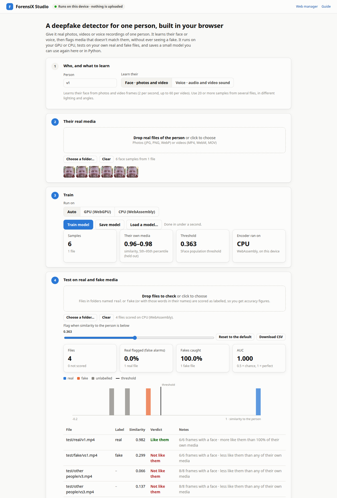

Studio: a detector for one person, in your browser¶
ForensiX Studio builds a deepfake detector for one person from their real photos, videos or voice recordings, then tests it on real and fake files. It runs in a browser tab on your own GPU or CPU. Nothing is uploaded, and you don't need to install anything.
It's for anyone protecting a specific person, such as an executive, a public figure or yourself. It flags media that doesn't match that person's real face or voice, and it never needs to see a fake.
- Open it from the docs site: anas-rz.github.io/ForensiX/studio/
- Or from your own server:
http://localhost:8000/ui/studio/(the web manager links to it as Studio)

Enrolled from one real clip. The face swap made from that clip and two other people's clips score far below the person and are flagged; the person's own clip passes. Clips from SDFVD (CC BY 4.0).
Four steps¶
- Who, and what to learn. Name the person and choose Face (photos and video) or Voice (audio, or the sound of videos).
- Their real media. Drop in files or a folder of real media of the person. For faces, use 20 or more samples from several files, with different lighting and angles. For voice, use a few minutes of speech from more than one recording session. Each file is read on your device: two frames per second (up to 60 per video), or speech in 3-second segments.
- Train. Choose Auto, GPU (WebGPU) or CPU (WebAssembly). The encoders download once and are then cached: about 39 MB for faces and 83 MB for voice. Training takes under a second, because it learns the person's profile rather than a new network. Click Save model to download it as a small JSON file. Load a model… opens one again.
-
Test. Drop in files to check. Files in folders named
realandfake, or with those words in their names, count as labelled, and the page shows:- for each file: its similarity to the person, a verdict, and how it compares with the person's own media;
- for labelled sets: the false-alarm rate, the share of fakes caught, AUC, and a histogram.
Move the slider to try other thresholds, and download the scores as CSV.
What the score means¶
The similarity runs from about 0 (nothing like them) to 1 (just like them). It's the median, over a file's frames or speech segments, of how closely each matches the person's profile.
| Similarity | Faces (SFace) | Voices (ECAPA) |
|---|---|---|
| Default threshold: below this, "Not like them" | 0.363 | 0.25 |
| Where these thresholds come from | OpenCV Zoo, measured on LFW | SpeechBrain's verification default |
These thresholds are the encoders' published ones, not values fitted to your few files. The benchmark explains why: a threshold set from one person's media flagged a third of their real frames. The Their own media tile shows the range of similarities of the person's own media, each file scored against a profile built without it. The test table also says how a file compares with that range.
Use the model in Python, or on a server¶
A model saved in the Studio is the same file that
person-anomaly reads and writes:
import forensix
det = forensix.load("person-anomaly", weights_path="alice.face.forensix.json")
pred = det.predict("new_video.mp4")
pred.is_fake, pred.details["similarity"], pred.details["person_percentile"]
The browser and Python versions run the same networks with the same preprocessing, and gave the same verdicts on the test files: - Voice: the embeddings matched to a cosine of 1.000. - Faces: they matched to 0.97–0.99. The small differences come from image resizing in the browser.
scripts/check_studio.py re-runs this comparison on your own files.
How well it works¶
Measured on people the detector never saw before enrolling them, with the default thresholds (full benchmark):
| Data | AUC | Real flagged | Fakes caught |
|---|---|---|---|
| Face swaps (SDFVD), per video | 0.99 | 2% (1 of 53) | 77% |
| Voice spoofs (ASVspoof 2019 LA), per clip | 0.91 | 0% | 19% |
Read these numbers with their limits:
- Same session: the face test enrolls and tests on the same short video. Real footage from another day, camera or lighting will be less similar.
- Thresholds trade catches for false alarms: the default thresholds rarely flag real media, including real speech from another recording session. For voice, a threshold of 0.5 instead of 0.25 caught 45% of spoofs and flagged 1–2% of real clips. Pick yours on labelled files of your own, which the Test step lets you do.
- Good fakes get through: a face swap or voice clone that fully reaches the person's identity is built to pass this check. Pair the Studio with a deepfake detector that looks at how the media was made.
Why nothing is trained from scratch¶
The first design trained a small autoencoder (about 100–230k parameters) on each person's face crops or voice spectrograms, to flag what it couldn't reconstruct. It ran in the browser on WebGPU, but in the benchmark it scored near chance (AUC 0.40–0.57), both trained from scratch and fine-tuned from a model trained on other people's real media. Adding it to the identity score made the identity score worse. The Studio therefore ships what measured best: pretrained encoders and the person's profile.
Privacy and requirements¶
- Where things run: media, embeddings and models stay in the tab. The page downloads only
code and model weights:
- libraries: onnxruntime-web (MIT), from jsDelivr;
- face models: YuNet and SFace (OpenCV Zoo), from Hugging Face;
- voice model: ECAPA, from the same site as the page.
- What a saved model contains: the person's average embedding. That's biometric data, so store and delete it under the rules that apply to you (GDPR, BIPA and similar).
- Browser: a current Chrome, Edge or Firefox; Safari 17 or newer. GPU (WebGPU) needs a browser and graphics driver with WebGPU, and Auto falls back to CPU without it.
- Video formats: browsers decode H.264, VP9 and AV1. Convert older files, such as MPEG-4 Part
2
.mp4or.avi, withffmpeg -i in.mp4 -c:v libx264 -crf 18 out.mp4. - The page: open it over
http(s), not by double-clicking the file. Its voice model is served next to it, so a static copy needsstudio/models/ecapa.onnx. Export it withpython -c "from forensix.identity.anomaly import export_ecapa_onnx; export_ecapa_onnx('studio/models/ecapa.onnx')".
Next step: enroll several people and test them against each other in Identity and person models.